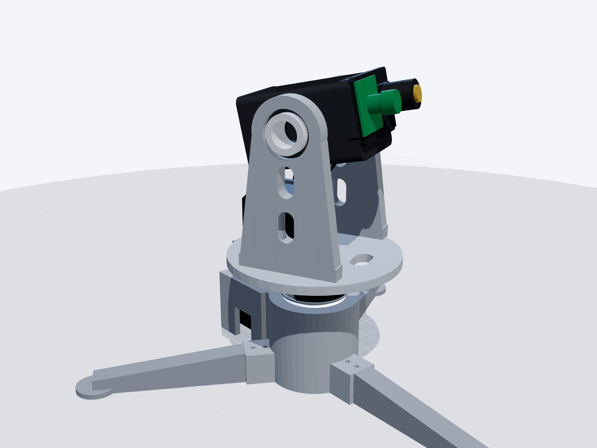
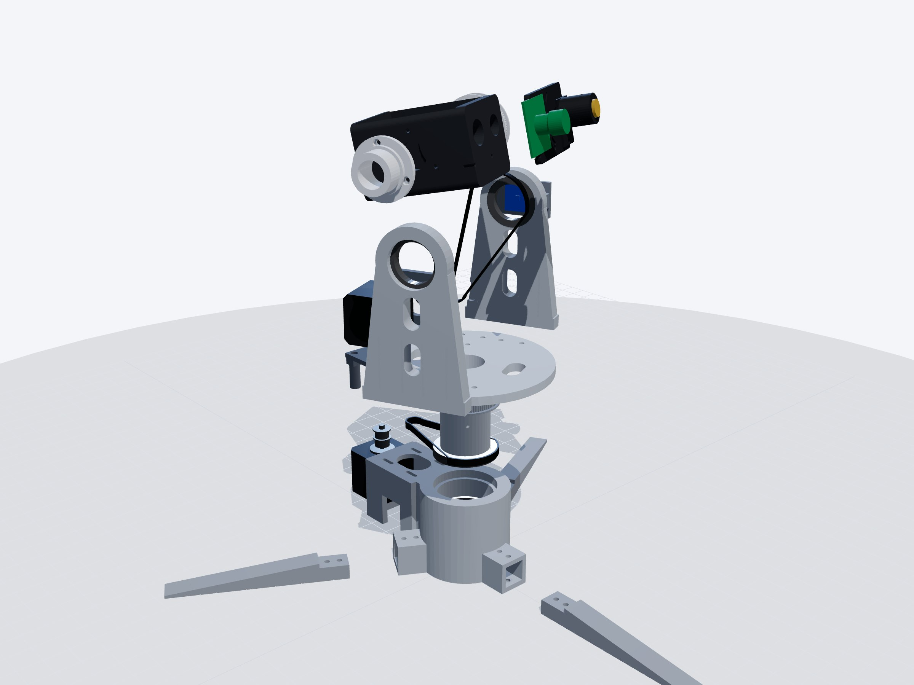
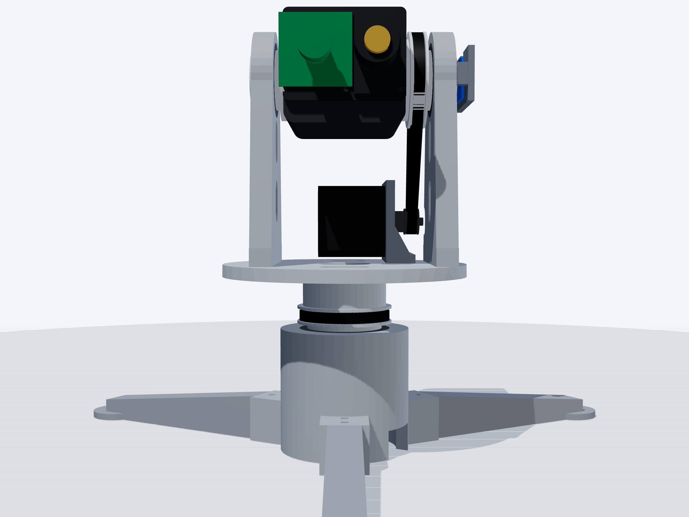
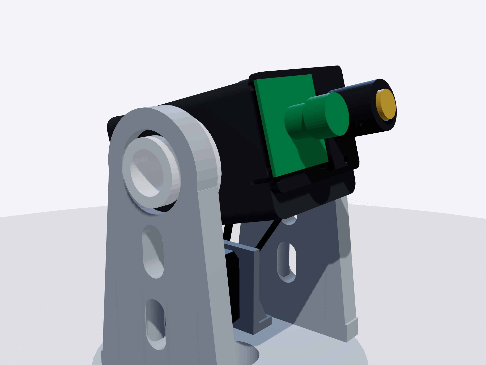
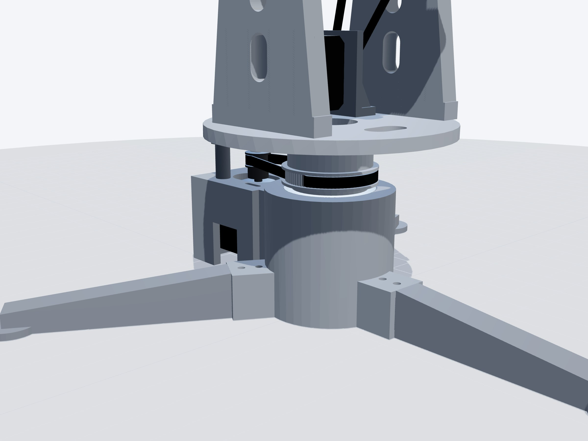
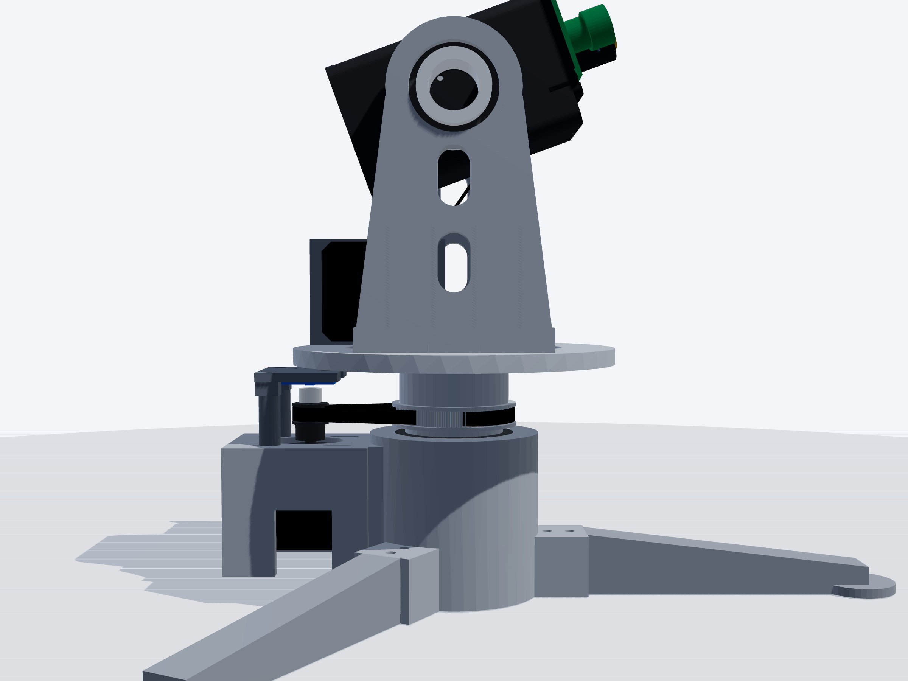
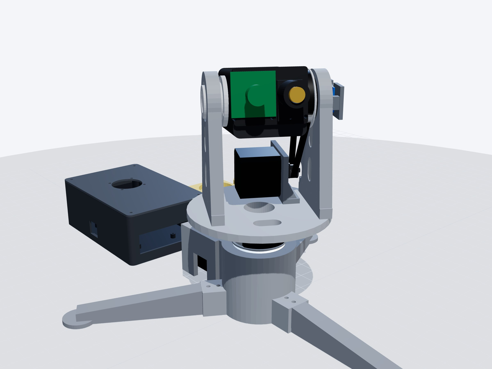
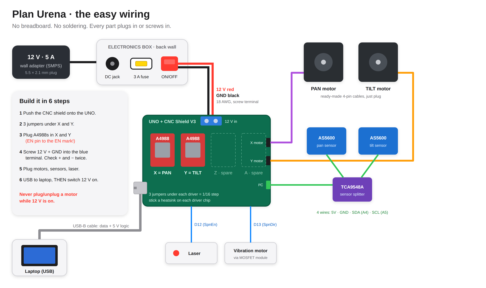

INTERNAL · MK3Plan Urena
Overview

A stiff, belt-driven pan-tilt for the tracker, printed in PETG and built around big hollow bearings. It uses the same software and the same protocol as MK2. The motors, drivers, sensors and camera come from MK2.
What changes from MK2
| MK2 | Plan Urena | |
|---|---|---|
| Frame | Acrylic, L-brackets, couplings | 3D-printed PETG, designed to fit |
| Drive | Motor shafts carry the load | 4:1 belts on both axes: 4 × torque, 4 × finer |
| Bearings | None of their own | Big hollow bearings: stiff, no wobble |
| Tilt motor | On the moving head frame | On the deck, under the head: compact and balanced |
| Cables | Loose loop around the rig | Down the hollow middle |
| Wiring | Breadboard + loose jumpers | UNO + CNC shield: everything plugs in |
| 12 V power | Adapter pigtail into a breadboard | Panel jack → 3 A fuse → switch → screw terminal |
| Pan sensor | On the output | On the pan motor shaft: 4 × finer reading |
Three ways to build a pan-tilt, and why we chose belts
| Printed gears | Direct drive (motor = axis) | Belts 4:1 + bearings (Plan Urena) | |
|---|---|---|---|
| Seen in | Hobby webcam trackers with big printed spur gears | Our MK1 / MK2 | Compact belt pan-tilts with a tripod base and the tilt motor on the turntable |
| Accuracy | Printed teeth have 0.3–1° of play (backlash): the aim wobbles when it reverses | Limited by the motor step and any load on its shaft | No play: a tensioned GT2 belt has no backlash, and 4:1 makes each step 4× finer |
| Stability | Good if the frame is stiff | The motor shaft carries the whole load | Best: big hollow bearings carry the load, the motors only turn |
| Parts to buy | Fewest (no belts, no pulleys) | Fewest | + 4 bearings, 2 belts, 2 metal pulleys (≈₹1,000) |
| Easy to build | Easy, but gear teeth must print cleanly | Easiest | Easy: slide the motor to tighten each belt, no fine gear meshing |
We keep belts: the same layout as the compact belt pan-tilt we liked (tripod base, pan motor in the base, tilt motor standing on the turntable, belt up the side), which gives the most accuracy for the least effort.
The plan in six steps
- 1. BuyOne trip to Amar Robotics and a bearing shop, plus one online order for belts.
- 2. Print the couponOne small print. Check the fits (page "Tests").
- 3. Print everything≈1,074 g, about 60–80 printer-hours at normal speed.
- 4. Assemble14 steps, about one day.
- 5. Wire + flashHalf a day. Nothing to solder.
- 6. Test + tuneSelf-test, belt tension, laser aim, then the Live page.
3D model
Every part, placed exactly as it fits. Drag to turn, scroll to zoom, click a part to see what it is.






Give the print shop the files exactly as they are: every STL is already turned the right way up on the bed. Print the test coupon first, check it, then print the rest.
Printer settings (the same for every part)
| Material | PETG (not PLA: PLA slowly bends under the belt pull and near the motors). Head, front plate and laser holder in black; the rest any colour. |
| Layer height | 0.2 mm, 0.4 mm nozzle |
| Walls | 4 walls, 5 top and 5 bottom layers |
| Infill | 40 % gyroid |
| Supports | None, except inside the motor pocket of the base hub |
| Brim | On the base hub and the electronics box |
| Scale | 100 %. Do not rescale anything. |
| Total | ≈1,074 g PETG, about 60–80 printer-hours at normal speed (a fast printer takes about half). Cost at ₹5–10 per gram: ₹5,370–10,740. Ask for one price for the whole job. |
The 20 pieces

00_test_coupon.stlChecks the fits before anything big is printed: both bearing pockets, both bearing pins, an M3 nut and a screw hole.
- Qty
- 1
- Size
- 130 × 110 × 10 mm
- PETG
- ≈62 g
- Colour
- Any
- Supports
- None
PRINT THIS FIRST. We check it before the rest.

01_base_hub.stlHolds the two big pan bearings and the pan motor. The cables come out of a hole at the bottom.
- Qty
- 1
- Size
- 155 × 114 × 70 mm
- PETG
- ≈195 g
- Colour
- Grey
- Supports
- Only inside the motor pocket
Biggest part. Use a brim.

02_leg_1 / _2 / _3.stlThree legs make a stable tripod. Bolt into the base hub.
- Qty
- 3
- Size
- 160 × 32 × 26 mm
- PETG
- ≈126 g
- Colour
- Grey
- Supports
- None
Print 3 (files 02_leg_1, _2, _3 are the same leg).

03_pan_sensor_bridge.stlHolds the pan sensor board just above the pan motor shaft.
- Qty
- 1
- Size
- 35 × 42 × 31 mm
- PETG
- ≈11 g
- Colour
- Grey
- Supports
- None

04_magnet_cap.stlSits on the pan motor shaft tip and holds the small round magnet dead centre.
- Qty
- 1
- Size
- 10 × 10 × 6 mm
- PETG
- ≈<1 g
- Colour
- Any
- Supports
- None
Tiny: print 2 (one spare).

05_spindle_washer.stlThree screws pull it up against the lower bearing so the pan has no play.
- Qty
- 1
- Size
- 43 × 43 × 3 mm
- PETG
- ≈3 g
- Colour
- Any
- Supports
- None

06_pan_turntable.stlThe hollow tube, the 80-tooth pulley and the round deck, all in one print.
- Qty
- 1
- Size
- 140 × 140 × 79 mm
- PETG
- ≈142 g
- Colour
- Grey
- Supports
- None
Print deck-down (the file is already turned).

07_arm_right.stlHolds the right tilt bearing. The tilt pulley turns just inside it; the tilt sensor bracket screws to its outside.
- Qty
- 1
- Size
- 80 × 132 × 12 mm
- PETG
- ≈64 g
- Colour
- Grey
- Supports
- None

08_arm_left.stlHolds the left tilt bearing. The cables leave the head on this side.
- Qty
- 1
- Size
- 80 × 132 × 12 mm
- PETG
- ≈64 g
- Colour
- Grey
- Supports
- None

09_tilt_motor_plate.stlStands on the deck under the head and holds the tilt motor. Slots let the motor slide to tighten the belt.
- Qty
- 1
- Size
- 62 × 48 × 17 mm
- PETG
- ≈19 g
- Colour
- Grey
- Supports
- None

10_tilt_sensor_bracket.stlScrews to the outside of the right arm and holds the tilt sensor facing the magnet in the trunnion end.
- Qty
- 1
- Size
- 54 × 30 × 10 mm
- PETG
- ≈8 g
- Colour
- Grey
- Supports
- None

11_head.stlThe box that carries the camera and the laser. Open top for easy wiring.
- Qty
- 1
- Size
- 92 × 64 × 58 mm
- PETG
- ≈97 g
- Colour
- Black
- Supports
- None
Black stops stray light.

12_front_plate.stlThe camera board screws to this. Slots fit 28 to 34 mm hole patterns.
- Qty
- 1
- Size
- 48 × 64 × 4 mm
- PETG
- ≈13 g
- Colour
- Black
- Supports
- None

13_laser_holder.stlTube for a 12 mm laser, with 3 screws to aim it exactly at the camera centre.
- Qty
- 1
- Size
- 34 × 22 × 26 mm
- PETG
- ≈9 g
- Colour
- Black
- Supports
- None

14_trunnion_left.stlHollow tube bolted to the head. Turns in the left bearing. Cables pass through it.
- Qty
- 1
- Size
- 46 × 46 × 21 mm
- PETG
- ≈14 g
- Colour
- Grey
- Supports
- None

15_trunnion_right.stlOne print: bolts to the head, the 80-tooth tilt pulley, then the tube that turns in the right bearing. The tilt magnet sits in its end.
- Qty
- 1
- Size
- 54 × 54 × 31 mm
- PETG
- ≈31 g
- Colour
- Grey
- Supports
- None

16_electronics_box.stlHolds the Arduino UNO + CNC shield. Power jack, fuse and switch on the wall.
- Qty
- 1
- Size
- 170 × 110 × 60 mm
- PETG
- ≈159 g
- Colour
- Dark grey
- Supports
- None
Use a brim.

17_electronics_lid.stlLid with a 40 mm fan over the motor drivers.
- Qty
- 1
- Size
- 170 × 110 × 5 mm
- PETG
- ≈57 g
- Colour
- Dark grey
- Supports
- None
Buy
Prices are estimates. Show this list at the shop and compare. Spares are included (a second UNO, CNC shield, drivers, belts, a pulley and a laser) so a dead part never costs a day.
Bearings, belts, pulleys ₹1,100–1,970
The moving parts. Take the test coupon and the printed pins to the bearing shop.
| Item | Qty | Each | Total | Where |
|---|---|---|---|---|
| 6808-2RS bearing (40 x 52 x 7 mm) 6808-ZZ is the same size (metal shields). Any brand. | 2 | ₹150–250 | ₹300–500 | Bearing shop |
| 6806-2RS bearing (30 x 42 x 7 mm) 6806-ZZ is the same size. | 2 | ₹120–200 | ₹240–400 | Bearing shop |
| GT2 pulley, 20 teeth, 5 mm bore, for 6 mm belt 1 spare. Metal (aluminium), with 2 grub screws. | 3 | ₹80–150 | ₹240–450 | Amar Robotics |
| GT2 closed belt 6 mm wide, 232 mm 1 spare. 240 mm also fits (anything 227 to 245 mm). | 2 | ₹80–150 | ₹160–300 | Online (Robu / Amazon) |
| GT2 closed belt 6 mm wide, 280 mm 1 spare. 276 to 284 mm fits. | 2 | ₹80–160 | ₹160–320 | Online (Robu / Amazon) |
Controller and power ₹2,570–3,850
No breadboard. Everything plugs into the CNC shield.
| Item | Qty | Each | Total | Where |
|---|---|---|---|---|
| Arduino UNO R3 (CH340 clone is fine) + USB-B cable 1 spare. The MK2 Nano is a third backup. | 2 | ₹450–700 | ₹900–1,400 | Amar Robotics |
| CNC Shield V3 (for UNO) 1 spare. Must say "V3" and fit on an UNO. | 2 | ₹250–350 | ₹500–700 | Amar Robotics |
| A4988 driver with heatsink Spares. Reuse the 2 from MK2 if they still work. | 2 | ₹150–200 | ₹300–400 | Amar Robotics |
| 12 V 5 A adapter (SMPS), 5.5 x 2.1 mm plug 12 V 3 A is the minimum. Not a 12 V 1 A phone-style one. | 1 | ₹450–650 | ₹450–650 | Amar Robotics |
| Panel DC jack 5.5 x 2.1 mm (female, with nut) Screws into the box wall. | 1 | ₹30–50 | ₹30–50 | Amar Robotics |
| Fuse holder (5 x 20 mm) + 3 A fuses Buy a pack of 5 fuses. | 1 | ₹40–80 | ₹40–80 | Amar Robotics |
| Rocker switch (KCD1, 6 A) Any 2-pin ON/OFF switch rated 3 A or more. | 1 | ₹20–40 | ₹20–40 | Amar Robotics |
| Silicone wire 18 AWG, red + black 1 m of each colour. For the 12 V only. | 2 | ₹50–80 | ₹100–160 | Amar Robotics |
| 40 mm fan, 12 V Cools the two drivers. | 1 | ₹80–120 | ₹80–120 | Amar Robotics |
| MOSFET switch module (D4184 / AOD4184) Switches the vibration motor. A 2N2222 + diode from the MK2 kit also works. | 1 | ₹60–90 | ₹60–90 | Amar Robotics |
| Dupont jumper cables, female-female, 20 cm One pack of 40. For the sensors. | 1 | ₹60–100 | ₹60–100 | Amar Robotics |
| Spiral cable wrap, 1 m Keeps the cable bundle neat. | 1 | ₹30–60 | ₹30–60 | Hardware shop |
Laser and magnets ₹260–520
| Item | Qty | Each | Total | Where |
|---|---|---|---|---|
| 12 mm laser module, 650 nm red, 5 mW, 5 V 1 spare. Only 5 mW (Class 2/3R). Never a "burning" laser. | 2 | ₹100–200 | ₹200–400 | Amar Robotics |
| Diametric magnet 6 x 2.5 mm (AS5600 type) Spares. One usually comes with each AS5600 board. | 2 | ₹30–60 | ₹60–120 | Online (Robu / Amazon) |
Screws and small things ₹426–746
Buy an M3 kit; the counts are in the table on the "Assemble" page.
| Item | Qty | Each | Total | Where |
|---|---|---|---|---|
| M3 screw kit (6 to 30 mm) with nuts and washers | 1 | ₹250–400 | ₹250–400 | Hardware shop |
| M3 x 35 mm screws For the pan sensor bridge (2 + 2 spare). | 4 | ₹5–10 | ₹20–40 | Hardware shop |
| M4 x 30 mm bolts + nuts Legs. | 6 | ₹8–15 | ₹48–90 | Hardware shop |
| M4 x 20 mm bolts + nuts + washers Arms to the deck. | 8 | ₹6–12 | ₹48–96 | Hardware shop |
| M2.5 x 6 mm screws Sensor boards. M2 x 6 self-tapping also works. | 6 | ₹5–10 | ₹30–60 | Hardware shop |
| Super glue (CA) One drop fixes the magnet cap. | 1 | ₹30–60 | ₹30–60 | Hardware shop |
Reuse from MK2
Most of the electronics come straight from MK2. The frame is new.
| MK2 part | Reuse? | Notes |
|---|---|---|
| 2 x NEMA17 motors + their cables | Yes | Same motors, same 4-pin cables. |
| 2 x A4988 drivers | Test first | Plug each into the CNC shield and run the self-test. If one burned with the breadboard, use a spare. |
| 2 x AS5600 sensors + magnets | Yes | Pan sensor now reads the pan motor shaft; tilt sensor reads the end of the right trunnion. |
| TCA9548A sensor splitter | Yes | Still needed: both AS5600s have the same address. |
| USB camera | Yes | Works as it is. See "Camera" for a sharper option. |
| KY-008 laser | Backup | The head is made for a 12 mm tube laser. Keep the KY-008 as a spare. |
| Vibration motor + transistor kit | Yes | Or use the MOSFET module. |
| Arduino Nano | Spare board | The MK3 firmware also runs on the Nano (set BOARD_CNC_SHIELD to 0). |
| Beacon + decoy | Yes | No change. |
| Laptop software + Live page | Yes | Pick "Both belts 20T→80T (4:1)" in the drive menu. |
| 12 V 2 A adapter | Tests only | Too weak for two motors at full speed, and its wire was damaged. Keep it for bench tests of one motor. |
| Breadboard, acrylic, L-brackets, couplings, servo | No | Not needed any more. |
Camera
Accuracy comes from the mechanics and from degrees per pixel, not from a fancy camera. The belts and bearings already give the big gain. A narrower lens is the next cheap step.
| Camera | Price | View | Why |
|---|---|---|---|
| Keep the MK2 USB camera | Free | 1280 px across about 70° 0.055° per pixel | Works today. Nothing to buy. |
| USB 1080p camera board with M12 lens mount (OV2710 or IMX291) + 6 mm M12 lens Best upgrade | ₹1,800–3,500 + lens ₹300–600 | 1920 px across about 51° 0.027° per pixel | Recommended upgrade: about 2× finer aim. The 38 × 38 mm board fits the front plate. Online (Amazon: "USB camera module 1080p M12"). |
| Logitech C270 | ₹1,300–1,700 | 1280 px across about 55° 0.043° per pixel | Easy to find locally. A little better than a basic webcam. Mount with a strap, not the front plate. |
| ESP32-CAM, OV7670, Raspberry Pi camera Skip | — | — | Not recommended: Wi-Fi delay, low quality, or needs a Raspberry Pi. |
Wiring

Why the old setup burned, and what stops it now
| What went wrong | Plan Urena |
|---|---|
| Motor current (up to 1.5 A) through breadboard strips, which are made for about 0.5 A. They get hot and arc. | 12 V goes on 18 AWG silicone wire into a screw terminal on the CNC shield. |
| No big capacitor at the driver. Plugging in 12 V makes a voltage spike that can kill an A4988. | The CNC shield has the 100 µF capacitor built in, right beside the drivers. |
| A loose adapter pigtail can short. | Panel jack in the box wall, then a 3 A fuse, then a switch. A short blows a ₹5 fuse, not the drivers. |
| A driver running hot for a long time. | Heatsinks, a 40 mm fan in the lid, and the current set correctly (Vref below). |
Pins (UNO + CNC Shield V3)
| UNO | Shield label | Goes to |
|---|---|---|
D2 / D5 | X.STEP / X.DIR | Pan driver (X socket) |
D3 / D6 | Y.STEP / Y.DIR | Tilt driver (Y socket) |
D8 | EN | Both drivers on/off (LOW = on) |
D12 | SpnEn | Laser signal |
D13 | SpnDir | Vibration motor (through the MOSFET module) |
A4 / A5 | SDA / SCL | TCA9548A splitter → both AS5600 sensors |
5V / GND | 5V / GND | Sensors, splitter, laser, MOSFET module |
12 V terminal | blue screw terminal | From the ON/OFF switch (red +, black −) |
Clone shields sometimes label the SDA/SCL pins differently. Take a photo of yours and check before you plug the sensor wires in.
Set the motor current (Vref) once, before the motors move
- Motors plugged in, 12 V ON, USB unplugged. Multimeter on DC volts.
- Black probe on any GND. Red probe touching the small metal screw (potentiometer) on the driver.
- Turn the screw with a small plastic or ceramic screwdriver until the meter shows the value below. Do both drivers.
| Tiny resistor near the chip says | Set Vref to | Motor current |
|---|---|---|
R100 (most boards) | 0.64 V | 0.8 A: runs cool, and the 4:1 belt gives plenty of torque |
R050 | 0.32 V | 0.8 A |
R200 | 1.28 V | 0.8 A |
Formula: Vref = 8 × R × I. If a motor misses steps under load, raise it by 0.1 V at a time, up to 1.0 A.
Five rules
- Check + and − of the adapter with a multimeter before you connect it the first time.
- Driver the right way round: its EN pin goes to the EN mark on the shield. Backwards = dead driver.
- Never plug or unplug a motor while 12 V is on.
- USB into the laptop first, then switch 12 V on. Switch 12 V off before unplugging USB.
- Three jumpers under each driver = 1/16 step. The firmware expects this.
Assemble
- Check the test coupon
Bearings press into the pockets with firm thumb pressure: no hammer, and they must not fall out. The printed pins slide into the bearings with a firm push. An M3 nut drops into its hexagon; a screw threads into the small hole. If any fit is wrong, stop and tell the team: one number in the CAD fixes it.
- Legs
Slide the three legs into the base hub. M4 × 30 bolts from the top, nuts in the hexagons underneath.
- Pan bearings
Press one 6808 into the top of the base hub and one into the bottom (through the big hole underneath). Press on the outer ring only, with a flat block.
- Pan motor
Put the 20T pulley on the motor shaft with its hub DOWN, 0.5 mm above the motor face, grub screw on the flat. Push the motor into the tower from below. Two front M3 × 8 screws, loose for now.
- Pan turntable
Loop the 232 mm belt around the turntable's pulley. Lower the hollow spindle down through both bearings and hook the belt over the motor pulley. From underneath: the spindle washer and 3 × M3 × 12. Tighten until there is no play, but the deck still turns freely.
- Pan belt tension
Slide the motor outwards until the belt makes a low "twang" when plucked, then tighten the motor screws.
- Pan sensor
Press the magnet into the magnet cap (flush with the top). One drop of super glue inside the cap, push it onto the motor shaft tip. Screw the AS5600 under the sensor bridge, chip facing down. Fix the bridge with the two back motor screws (M3 × 35).
- Head
Camera board on the front plate; front plate on the head. Laser into its holder, holder onto the front plate. Left (hollow) trunnion: 3 × M3 × 10, nuts in the flange. Right trunnion (the one with the pulley): 3 × M3 × 12 from inside the head. Press the tilt magnet into the end of the right trunnion.
- Tilt bearings
Press one 6806 into each arm, from the inner face (the side with the big pocket).
- Head into the arms
Hold the head between the arms and slide both arms onto the trunnions. Stand the arms on the deck and bolt them (M4 × 20, nuts in the deck). Push the arms gently towards the head before tightening: no side play, but the head still tilts easily.
- Tilt drive
Tilt motor onto its stand (4 × M3 × 10, loose) with the 20T pulley, hub towards the stand. Stand onto the deck under the head (2 × M4 × 16, nuts in the deck). Loop the 280 mm belt over the pulley on the right trunnion and the motor pulley. Slide the motor down until the belt twangs, tighten. Tilt sensor bracket on the outside of the right arm, AS5600 in it, chip facing the magnet.
- Cables
Camera USB and laser wires: out through the left trunnion, down the left arm (cable ties), into the hole in the middle of the deck, down the spindle, out at the bottom of the base. Tilt motor wires go straight into the deck hole (the motor sits right beside it); tilt sensor wires down the right arm. Leave a loose loop above the deck so a ±150° pan never pulls.
- Electronics box
DC jack, fuse holder and switch into the wall. UNO on the standoffs, CNC shield on top, drivers in X and Y, jumpers in. 12 V wires: jack → fuse → switch → shield terminal. Fan in the lid. TCA9548A and the MOSFET module on their standoffs.
- First power-on
Follow "Wiring": check polarity, set Vref, flash the firmware, run the self-test.
Screws, step by step
| Where | Screw | Qty |
|---|---|---|
| Legs → base hub | M4 × 30 + nut | 6 |
| Pan motor → base hub (front 2) | M3 × 8 | 2 |
| Pan motor + sensor bridge (back 2) | M3 × 35 | 2 |
| Spindle washer → turntable | M3 × 12 | 3 |
| Arms → deck | M4 × 20 + nut + washer | 8 |
| Left trunnion → head | M3 × 10 + nut | 3 |
| Right trunnion → head (from inside the head) | M3 × 12 | 3 |
| Tilt motor → its stand | M3 × 10 | 4 |
| Tilt motor stand → deck | M4 × 16 + nut | 2 |
| Tilt sensor bracket → right arm | M3 × 12 | 2 |
| Front plate → head | M3 × 12 | 3 |
| Camera board → front plate | M2 or M3 × 8 + nut | 4 |
| Laser aiming screws | M3 × 8 | 3 |
| AS5600 boards | M2.5 × 6 | 4 |
| UNO → box | M3 × 6 | 4 |
| Fan → lid | M3 × 12 | 4 |
| Lid → box | M3 × 10 | 4 |
Firmware & simulation
One file: rig_firmware_v3.ino. The same protocol as MK2, so the Live page and the laptop software do not change.
Flash it
- Arduino IDE 2 → Library Manager → install AccelStepper.
- Open
rig_firmware_v3.ino. Tools → Board → Arduino Uno. Pick the port. Upload.
Or on the Mac:tools/rig/flash.sh urena - Serial Monitor at 115200. It prints
# ZeroDrift Mk2 ready, encoders=yes, belts=4:4. (It still says "Mk2" on purpose: that is how the Live page recognises a stepper rig.) - Type
!and Enter: the self-test blinks the laser, turns pan +10° and back, and prints# encoder saw 10.0x deg. If it says "direction reversed", flipPAN_ENC_DIRin the file and upload again. - Live page → connect the rig → MK2 DRIVE: "Both belts 20T→80T (4:1)".
#define BOARD_CNC_SHIELD 1 to 0.
Python driver: mk2.py needs steps_per_rad × 4 for the belts.Try it first in Chrome (Wokwi, free)
- Open wokwi.com/projects/new/arduino-uno.
- Paste
sketch.inoanddiagram.jsonfrom the Wokwi folder, and add the library AccelStepper. - Press ▶. Type
P3556 T-711: the pan motor turns 400° (= 100° of the rig, because of the belt), tilt −80°. TypeL7.0: the red LED blinks 7 times a second.P999999stops at 150°: the limit works.
Tested on a PC
The firmware was compiled on a PC with fake motors, fake sensors and a fake clock, and checked 42 times on each board
(UNO + CNC shield, and Nano): travel limits, the 4:1 maths, both sensors over the full ±150° (including the sensor's 0/360 seam),
skipped steps showing up, the laser at exactly 7.00 Hz, junk input, and the self-test (including a sensor mounted the wrong way round).
All pass. Run it again with bash tools/mk3/fwtest/run.sh.
Tests
Tick these in order. Each one catches a mistake before it costs a part.